JSBin is an HTML online editor designed to help those who are about to learn front-end development or are currently learning it.
Runoob Tutorial has also launched an HTML online editor, accessible at:https://c.runoob.com/front-end/61
Below we will look at the user guide for this tool:
Quick Start Guide
After opening the page, you will see the following screen. The URL bar ishttp://jsbin.com/just that, and below are the HTML and JavaScript editor panels where you can enter content:

As soon as you type any character in any editor panel, you will immediately notice that the "URL bar" changes. As shown below, area 1 is yourBin ID, area 2 is the Bin'srevision number(It starts from 1 by default), and area 3 is the currentdisplay mode, where "edit" represents "Edit" mode. By default, the HTML / CSS / JavaScript you enter will immediately be reflected in the Output panel on the far right.
Note: InJS BinJS Bin, every front-end web page combination (HTML + CSS + JavaScript) is called a Bin!

Of course, as long as youBinfinish setting it up, you can directly share your current JS Bin URL. Very convenient!
Navigation Bar Introduction
As shown below is theJS Binmain layout after entering, very simple; at the top is just a navigation bar. Next, we will explain according to the numbered figure:

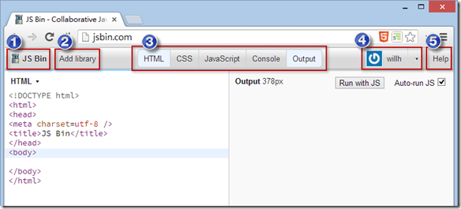

Navigation Bar 1. JS Bin Main Menu
You can create a new one at any timeBin, clickNewthe option.

If you have registered as a member, you will see theOpenfeature, because all theBinBins you have edited are automatically saved, and you can reopen previously written ones at any time.BinsAs shown below, if you no longer want to see certain Bins, you can also set them to archive; by default they won't be seen here, and you can still retrieve them later.
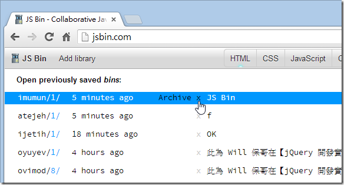
As shown below, clickArchive viewto restore the previously archivedBins

The main menu'sAdd descriptionfunction is just to help you add a description meta tag to your HTML.

The main menu'sCreate milestonefunction simply tells JS Bin: "I have completed a Bin milestone; please fix the current version for me." Therefore, after clicking this function, the "revision number" in the JS Bin URL will automatically+1

The main menu'sSave as templatefunction is to take your currentBinBin and save it as a template, so that when you add new ones laterBinthe default HTML/CSS/JavaScript will have theBincontent you currently set.
The main menu'sClonefunction differs from the earlier one only slightly: it does not change the revision number, but instead uses a brand newCreate milestonefunction has only a small difference: it is not changing a revision number, but rather a whole newBinID, as shown below:

The main menu'sDownloadfunction is to take theBinBin and download it; it will merge the HTML/CSS/JavaScript into a single HTML file.
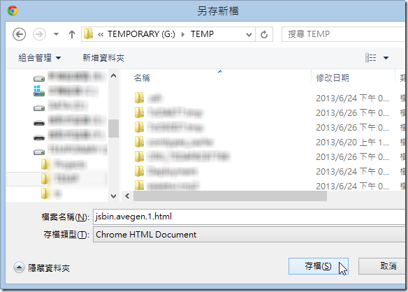
Navigation Bar 2. Add Library (Insert Library)
This button makes it convenient to insert some common external resources into your HTML, such as jQuery, jQuery UI, jQuery Mobile, Bootstrap, YUI, AngularJS, Kendo UI, Backbone, Modernizr, etc. It's a handy little tool.

Navigation Bar 3. Various Editors, Console, and Live Preview Panels
HTML Editor Panel
This editor panel has syntax highlighting. Unfortunately, it doesn't have IntelliSense or auto-completion yet, but it does supportEmmet ( Zen Coding) writing method, which is really powerful! Those who don't know Zen Coding can refer to a tutorial video I recorded earlier [Making Good Use of VS2012 Extensions - Using ZenCoding to Quickly Generate HTML Syntax (Web Essentials 2012)], which demonstrates how to use the specialZen Codingsyntax to quickly write HTML content!
In addition, you can also switch between different syntax modes, and finally clickConvert to HTMLto automatically convert to HTML format.

CSS Editor Panel
This is very similar to the HTML editor, and it also supportsZen Codingsyntax! You can also use the more efficient LESS or Stylus syntax to write CSS styles, and finally clickConvert to CSSto automatically convert to standard CSS format.
Note: You can even use JS Bin directly as aLESS或Styluslearning tool!
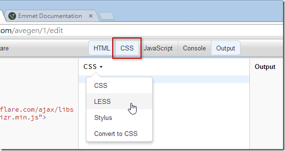
JavaScript Editor Panel
This is also very similar to the HTML/CSS editors, supports various syntaxes that help write JavaScript efficiently, and also supports TypeScript!
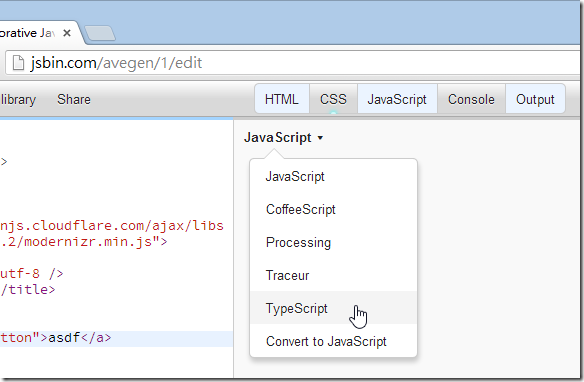
Console Panel
This panel is the same as the Console panel in various browsers' developer tools. I don't know why they also made a web version; I think it's not better than the built-in one in browsers, so I mostly don't use it.

Output Panel
The main purpose of this panel is to output the execution result of the final HTML/CSS/JavaScript combination. By default,Auto-run JSthe option is checked, which means when you type in the JavaScript editor, it continuously refreshes the web page in the Output panel. Sometimes this option can cause the browser to crash. If you encounter browser instability, it is recommended to uncheck this item. After checking, if you want to execute the modified JS, you must pressRun with JSthe button to actually execute the new version of the JavaScript program.

The far rightLive previewarrow opens the web page in a brand new window. At this point you'll notice the URL is slightly different, that iseditthis part is missing, which also means you can share this URL with others, let them see the execution result of the page, or directly interact more completely with the interactive functions set on the page, without being affected by theJS Bineditor panel. As shown in the comparison below:

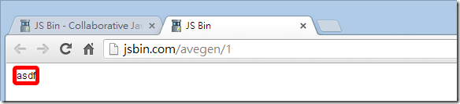
Navigation Bar 4. Login, Register, Update Member Account Password (No Personal Information)
With JS Bin, you can register successfully by just entering your Email and Password, and there is no identity verification. If you enter the wrong account or password, it doesn't matter; just register a new one! On the screen after login, you can update your Email and Password anytime you want. Very open!
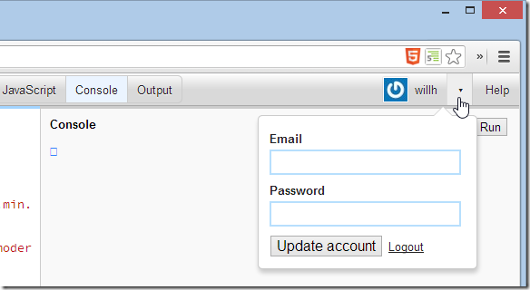
Navigation Bar 5. Help Files
If you read all the links here, you'll realize that you were fooled by JS Bin's simple appearance; in fact, it is very rich in features!
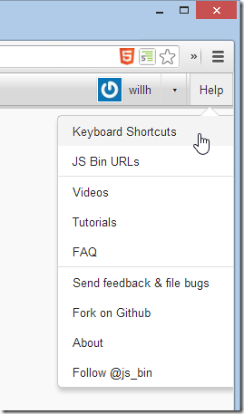
Navigation Bar 6. Share
When yourBinBin is finished editing, you can share it in many ways. This Share function menu provides some features:
Lock revision #1 from further changes means you want to lock the current #1 version (i.e., the one in the URL bar1part). This function is exactly the same as the JS Bin main menu'sCreate milestonefunction.
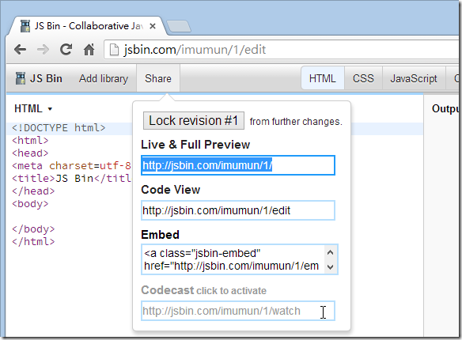
After entering the URL provided by Live & Full Preview, you get a web page without editor panels, which is less distracting when experimenting with certain features. However, a floating "Edit in JS Bin" button still appears in the upper-right corner of the page, allowing you to enter the editor panel at any time.

Code View is the screen where we edit.
Embed not only embeds a hyperlink, but also loads a JavaScript file at the end, which directly converts the hyperlink into a complex page, as shown below:

After putting this string into a web page, the displayed result is as shown below:

The last one, Codecast, is a "broadcast" feature. You can share the URL with others and ask them to open the page. After that, you can continue modifying any content of this Bin, and the other person's browser will show the same content as you see. That's why it's called a "broadcast" feature. It's very suitable for online teaching or distance learning!
§ Share some tips for using JS Bin
1. Enable line number display
This is an undocumented trick. Simply double-click quickly on the title of the editor pane with the mouse to enable line number display. Double-click again to turn it off. Very convenient.
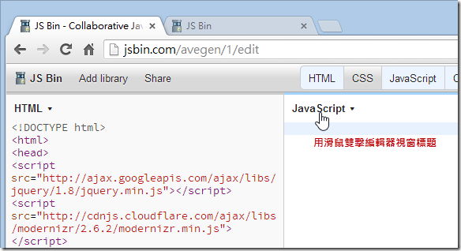

2. The method ofBincustomizing the ID
This is another undocumented trick. Most people think JS Bin cannot customize the URL, but it actually can. The method is as follows:
Don't worry about the current URL for now. Just type the customized one you want directly in the address barBin ID, as shown below:

After pressing Enter, a brand new Bin is automatically generated, and thisBin IDnow belongs to you! (^_^)

3. ControllingBinthe default panes of the edit screen
When you want to enter the edit screen of a certain Bin, depending on each person's JS Bin settings, the 5 default panes that open will be different. If you want to share a Bin with someone today, and you want the other person to only have the HTML and JavaScript panes open by default, you can just modify the URL slightly. For example, the following Bin URL:
- http://jsbin.com/avegen/1/edit
We can modify the URL to the following (add a Query String at the end of the URL and separate them with commas), and then send this URL to the other person. The other person will open the HTML and JavaScript panes as you intended:
- http://jsbin.com/avegen/1/edit ?html,javascript
The parameter names corresponding to these five panes are as follows:
- htmlHTML editor
- cssCSS editor
- javascriptJavaScript editor
- consoleConsole
- liveLive preview pane
4. Enable JavaScript bracket matching highlighting
Since JS Bin uses theCodeMirrorpackage as its JavaScript editor (this one is really powerful), so if you want to customize the JavaScript editor, it is possible. Just refer toCodeMirror's API documentationand you're done. Here I'll introduce a nice option setting, which is enabling JavaScript's bracket matching highlighting.
Let's take this Bin as an example:http://jsbin.com/oyuyev/1/edit

We need to execute the following command in the Console tab of the browser's developer tools. Open the browser's built-in developer tools (IE8+, Chrome, Firefox, Safari all have such tools), switch to the Console tab, and then enter:
jsbin.settings.editor.matchBrackets = <span class="kwrd" style="color: #0000ff;">true</span> ;

Then press F5 (refresh the web page), move the keyboard cursor to the matching curly brace, and you will see highlighting:
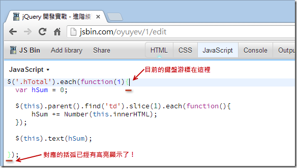
5. Reset the JS Bin development environment
In this version of JS Bin, if you execute the main menu'sSave as templatefunction, unfortunately you can't go back! That means you cannot restore the website's built-in default HTML template. Also, if you have adjusted too many settings in the editor and it can no longer be used normally, you can actually reset the JS Bin development environment. At this point, you can use the following trick.
Note: This is also an undocumented trick. I spent several hours researching to figure this one out!
Open the browser's built-in developer tools (IE8+, Chrome, Firefox, Safari all have such tools), switch to the Console tab, and then enterdelete jsbin.settingsand press Enter to execute. Once executed successfully, all settings will be reset.
delete jsbin.settings
However, the html / css / javascript templates content also needs to be cleared, because JS Bin stores these templates in the browser's localStorage (this is a storage mechanism in HTML5). At this point, you also need to enterlocalStorage.clear()to completely clear the remaining data.
localStorage.clear()
The screen after execution is shown below. After execution, press F5 (refresh) to return to the original default values!

6. Output only JavaScript content (so another Bin can load it via AJAX)
We takehttp://jsbin.com/ json-test /1/ editas an example. I entered apure JSON JavaScript. You can also see severalJSHintwarning messages here, but we don't need to worry about them for now.
{
"author" : "Will" ,
"bookname" : "ASP.NET MVC 4开发实战"
}
Note: Strings in JSON must be enclosed in double quotes!

At this point, we create another new Bin and add the jQuery libraryBin(Note: because the HTML content has been changed, it will immediately be assigned an

ID, generating a brand new URL)/editAt this point, we slightly modify the URL we just had, changing.jsto
- http://jsbin.com/ json-test /1 .js
to get only the JavaScript part, as follows:
$.ajax({
url: 'http://jsbin.com/json-test/1.js' ,
dataType: 'json' ,
success: function (data) {
alert(data.author + ' - ' + data.bookname);
}
});
Then enter the following jQuery code to test jQuery's AJAX functionality:

Click me to share notes
<p style="font-size:14px;">The note must be an extension of this article's content!</p><br> <p style="font-size:12px;"><a href="../tougao.html" target="_blank">Article submission, click here</a></p> <p style="font-size:14px;"><a href="./runoob-user-test-intro.html" target="_blank">How to get a registration invitation code</a></p> <h3 class="text-muted"><i class="fa fa-info-circle" aria-hidden="true"></i> You must <a href=".." class="runoob-pop">log in</a> before sharing notes!</h3> <p><a href="./runoob-user-test-intro.html" target="_blank">How to get a registration invitation code</a></p>